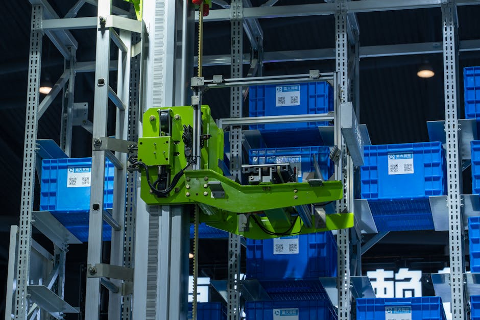

Imagine a world where your online orders arrive at your doorstep faster than ever before, where massive warehouses operate with incredible precision, and where the most strenuous and repetitive tasks are handled by tireless machines. This isn't science fiction; it's the reality being shaped by warehouse and logistics robots! These incredible machines are transforming the way goods are stored, moved, and delivered, making supply chains more efficient, safer, and remarkably speedy. If you've ever wondered how your favourite e-commerce giant manages to deliver millions of packages daily, a huge part of the answer lies in the silent, tireless work of these robotic helpers.
The Rise of Warehouse and Logistics Robots
For centuries, warehouses were bustling hubs of human activity, with workers manually sorting, lifting, and moving goods. While human ingenuity remains irreplaceable, the sheer scale and speed required by today's global economy, especially with the boom in online shopping, presented new challenges. This is where robotics stepped in.
Warehouse and logistics robots are essentially automated systems designed to perform various tasks within a warehouse or distribution center. Their primary goal is to improve efficiency, reduce operational costs, enhance safety, and accelerate the movement of goods from storage to shipping.
Why are these robots so important?
- Speed and Efficiency: Robots can work 24/7 without breaks, moving goods much faster and more consistently than humans.
- Accuracy: They make fewer errors, ensuring the right products go to the right places.
- Safety: Robots can handle heavy loads, navigate hazardous areas, and perform repetitive tasks, reducing the risk of injuries to human workers.
- Space Optimization: Some robots can operate in narrower aisles or stack items higher, making better use of available warehouse space.
- Cost Reduction: While the initial investment can be significant, robots reduce long-term labor costs and damage to goods.
Meet the Robotic Workforce: Types of Warehouse Robots
The world of warehouse robotics is diverse, with different types of robots specialized for various tasks:
1. Automated Guided Vehicles (AGVs)
AGVs are the pioneers of warehouse automation. These vehicles follow predefined paths, often marked by magnetic tape, wires, or sensors that detect beacons. They're excellent for moving large quantities of goods between fixed points in a predictable manner. Think of them as trains on a track, but without the track being visible!
- Typical uses: Transporting pallets, moving materials from receiving to storage, or from storage to shipping docks.
- Navigation: Guided by physical markers or embedded wires.
2. Autonomous Mobile Robots (AMRs)
AMRs are the smarter, more flexible cousins of AGVs. Unlike AGVs, AMRs don't need fixed paths. They use advanced sensors (like LiDAR, cameras) and sophisticated software (like Simultaneous Localization and Mapping - SLAM) to understand their environment, navigate dynamically, and avoid obstacles in real-time. If an AMR encounters a person or an unexpected carton, it can go around it, rather than stopping and waiting.
- Typical uses: Picking individual items, moving shelves to human "pickers," sorting packages, inventory scanning.
- Navigation: Dynamic, uses maps, sensors, and AI to plan routes on the fly.
3. Robotic Arms
These are the multi-jointed "arms" you might see in car factories, but they're increasingly common in warehouses. Robotic arms are fantastic for precise, repetitive tasks that require dexterity.
- Typical uses: Picking individual items (piece picking), packing items into boxes, palletizing (stacking boxes onto pallets), depalletizing.
- Technology: Often equipped with vision systems (cameras) and grippers (suction cups, mechanical claws) to handle various product shapes and sizes.
4. Automated Storage and Retrieval Systems (AS/RS)
AS/RS are large, complex systems designed for high-density storage and automated retrieval of items. They can be shuttle systems, carousels, or cranes that move vertically and horizontally to store and retrieve goods from racks.
- Typical uses: Storing thousands of SKUs (Stock Keeping Units) in a compact space, especially for e-commerce fulfillment.
- Benefit: Maximizes storage capacity and significantly speeds up retrieval times.
"The future of logistics isn't about replacing humans with robots, but about augmenting human capabilities and creating new, more engaging roles in managing and optimizing these advanced robotic systems."
The Tech Behind the Bots: How Do They Work?
At the heart of every warehouse robot is a blend of hardware and software working in harmony:
- Sensors: Just like our eyes and ears, robots use sensors to perceive their environment.
- LiDAR (Light Detection and Ranging): Creates 3D maps of the surroundings using lasers.
- Cameras: For object recognition, barcode scanning, and visual navigation.
- Ultrasonic Sensors: Detects nearby obstacles using sound waves.
- Infrared Sensors: Detects proximity and temperature.
- Navigation Software: This is the robot's "brain" for movement. AGVs follow pre-programmed paths, often guided by QR codes, magnetic strips, or RFID tags embedded in the floor. AMRs use more advanced algorithms like SLAM (Simultaneous Localization and Mapping) to build a map of an unknown environment while simultaneously keeping track of its own location within that map.
- Artificial Intelligence (AI) & Machine Learning (ML): These technologies allow robots to learn from experience, make better decisions, optimize routes, and even identify damaged goods.
- Connectivity: Robots communicate with a central control system and each other using Wi-Fi or 5G to coordinate tasks and ensure smooth operations.
Real-World Impact: The Amazon Robotics Story
One of the most famous examples of warehouse automation is Amazon. In 2012, Amazon acquired Kiva Systems, a company that developed small, orange, autonomous robots. These robots, now known as Amazon Robotics, revolutionized Amazon's fulfillment centers.
Instead of workers walking miles to pick items from shelves, Kiva robots bring entire shelves of products directly to human pickers. This "goods-to-person" system dramatically increased efficiency, reduced walking time for employees, and allowed Amazon to process orders at an unprecedented speed, contributing to their promise of fast delivery.
Why This Matters for India
India's e-commerce market is booming, and companies are constantly looking for ways to improve their supply chains and meet growing customer demands. Warehouse and logistics robots are becoming increasingly vital for:
- Meeting E-commerce Demands: As more Indians shop online, efficient fulfillment centers are crucial for timely deliveries.
- Boosting Manufacturing: Indian manufacturers can use these robots to streamline internal logistics, making factories more productive.
- Creating New Jobs: While some fear job displacement, automation often creates new roles in robotics maintenance, programming, data analysis, and system supervision.
- Driving Innovation: There's a huge opportunity for Indian startups and engineers to develop innovative robotics solutions tailored to local needs and conditions.
Getting Started with Robotics: Your Journey to Becoming a Maker
The world of robotics is exciting, and you don't need to be a genius to start exploring it! Here at MakerWorks, we believe in hands-on learning.
If you're fascinated by how robots move and make decisions, here's a simple Python code example that demonstrates a basic logic for an AMR navigating a path. Imagine this robot has sensors to detect obstacles and a goal to reach.
# Simple Python example for a robot's movement logic
class SimpleAMR:
def __init__(self, x=0, y=0):
self.x = x
self.y = y
self.direction = "forward" # Can be 'forward', 'left', 'right'
print(f"AMR initialized at ({self.x}, {self.y})")
def detect_obstacle(self):
# In a real robot, this would read from sensors (e.g., LiDAR, ultrasonic)
# For this example, let's simulate an obstacle randomly
import random
return random.choice([True, False, False, False]) # 25% chance of obstacle
def move(self):
if self.detect_obstacle():
print("Obstacle detected! Changing direction...")
self.turn_right() # Simple avoidance strategy
else:
if self.direction == "forward":
self.x += 1 # Move forward
# In a real robot, you'd have more complex navigation based on maps
print(f"AMR moved to ({self.x}, {self.y})")
def turn_right(self):
# For simplicity, just change direction, not actual rotation
self.direction = "right"
print("AMR turned right.")
def run_for_steps(self, steps):
for i in range(steps):
print(f"\n--- Step {i+1} ---")
self.move()
# Let's simulate our AMR
my_robot = SimpleAMR()
my_robot.run_for_steps(5)
This simple code illustrates how a robot might perceive its environment (through `detect_obstacle`) and react to it (by calling `turn_right` or continuing to `move`). Real-world robot programming is much more complex, involving advanced algorithms for path planning, object recognition, and human-robot interaction, but this gives you a taste of the logical thinking involved.
To dive deeper, you can:
- Learn Programming: Python is a great language for beginners in robotics.
- Experiment with Kits: Robotics kits like Arduino, Raspberry Pi, or LEGO Mindstorms are excellent for hands-on learning.
- Join Workshops: MakerWorks offers exciting workshops and courses where you can build and program your own robots.
The Future is Automated and Collaborative
The journey of warehouse robots is far from over. We're moving towards a future where robots are not just tools but collaborators. Imagine human workers and robots working seamlessly side-by-side, sharing tasks, and even learning from each other.
Future trends include even more intelligent robots powered by advanced AI, swarm robotics (where many small robots work together like a colony of ants), and better human-robot interfaces that make programming and interaction easier than ever before. India has a unique opportunity to be at the forefront of this innovation.
Conclusion
Warehouse and logistics robots are no longer just a futuristic concept; they are an integral part of modern commerce, silently powering the global supply chain and bringing products to our homes faster than ever. From the humble AGV to the intelligent AMR, these machines showcase the incredible power of engineering, computer science, and artificial intelligence.
For students and enthusiasts in India, this field presents a vibrant landscape of opportunities. By understanding the principles behind these robots and getting hands-on experience, you can be part of shaping the automated future. Are you ready to build the next generation of logistics innovation?
Join MakerWorks today and start your journey into the exciting world of robotics! Explore our courses and workshops to turn your curiosity into creation.